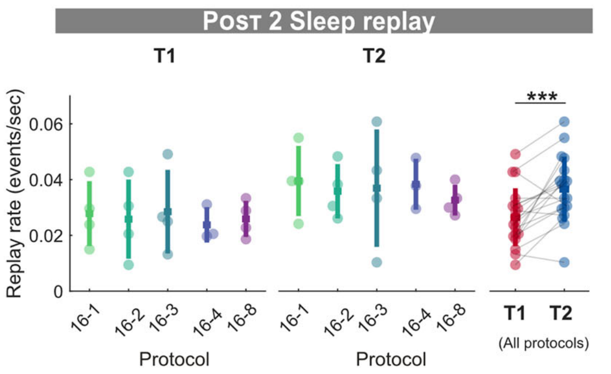

Selective hippocampal reactivation drives prioritized memory transfer
Venue · Date
Part 1
Motivation
Sleep reactivation transfers memories
- During sleep, the hippocampus reactivates recent experience
- Reactivation is coordinated with the neocortex
- Systems consolidation: the neocortex gradually takes over the memory

Wilson & McNaughton 1994 · McClelland et al. 1995 · Klinzing et al. 2019
Reactivation is selective
- Novel and weakly learned memories are replayed more
How does the brain pick what to replay?

Schapiro et al. 2018 · Huelin Gorriz, Takigawa & Bendor 2023 (Fig. 3C)
A CA1 ↔ PFC motif during sleep

- CA1 activity recruits PFC
- Independent PFC ripples suppress CA1
- The most suppressed assemblies are those reactivated with PFC

Wierzynski et al. 2009 · Shin & Jadhav 2024 (graphical abstract)
Hypothesis: cortical feedback steers replay
- Hippocampus drives cortical learning
- Cortex silences what it already knows
- Replay drifts to what is not yet transferred
Here: selective feedback, in predictive coding
Wang, Poe & Zochowski 2008 (diffuse feedback inhibition)
Part 2
Model
Two coupled memories: teacher and student

Building block: a predictive-coding memory
Hippocampus and cortex: each a covPCN, a predictive-coding network that stores memories
Building block: inference and learning
Prediction error and free energy
$$\varepsilon = x - W x \qquad F = \tfrac{\pi}{2}\,\lVert\varepsilon\rVert^2$$
Fast inference on activity
$$\tau\,\dot x = -\nabla_x F = -\pi\,(I-W)^\top \varepsilon$$
Slow learning on weights (local, Hebbian)
$$\dot W = \eta\,\pi\;\varepsilon\,x^\top$$
Memories are zero-error states
After learning, every stored memory $m$ is predicted perfectly
$$(I-W)\,m = 0 \quad\Rightarrow\quad F(m) = 0$$
- Inference from a partial cue descends $F$: the memory is completed
- Linear network: any mix of memories also has $F=0$, a flat memory subspace
$$\mathcal U = \ker(I-W)$$
covPCN 64 MNIST digits stored
originalcueretrieved

Tang et al. 2023 (Fig. 4A, implicit covPCN, 64 MNIST images stored)
Classical PC vs ours: the sign of the feedback
top-down $= (-)\times(-) = +$ disinhibition
teacher pulled toward the student
teacher pulled toward the student
top-down $= (-)\times(+) = -$ inhibition
teacher pushed away from what the student predicts
teacher pushed away from what the student predicts
Coupling through an interface error

Coupling through an interface error
Each network $\alpha \in \{\cS{S}, \cT{T}\}$ as before, with $M_\alpha = I - W_\alpha$, $\;\varepsilon_\alpha = M_\alpha x_\alpha$
One interface error unit per neuron pair
$$\varepsilon_{TS} = \cT{x_T} - \cS{x_S}$$
Student: conventional PC, descends its free energy
$$\tau_S\,\dot x_S = -\pi_S M_S^\top \varepsilon_S + \pi_{TS}\,\varepsilon_{TS}$$
Teacher: sign reversed, $\cK > 0$
$$\tau_T\,\dot x_T = -\pi_T M_T^\top \varepsilon_T + \cK\,\varepsilon_{TS} + \sigma_\xi\,\xi_T, \quad \lVert x_T\rVert = 1$$
$\cS{x_S} \to \varepsilon_{TS} \to \cT{x_T}$ is inhibitory: the cortex suppresses what it already predicts
Two phases: storage, then transfer
- A Teacher clamped to the memories, learns $W_T$
- B Clamp off, interface on: intrinsic activity only
- $W_T$ frozen, only $W_S$ learns
- Student never sees the original data

Part 3
Results
The cortex alone can now recall the memories

Summary
Take-home
Supplementary
For questions
Keeping the teacher on its memories
Transfer needs $x_T$ near its memory subspace $\mathcal U_T$
$$\cK \;<\; \pi_T\,\sigma^2_{\min}$$
$\sigma^2_{\min}$: smallest nonzero eigenvalue of $M_T^\top M_T$
- Off $\mathcal U_T$, the recurrent error pulls $x_T$ back at rate $\ge \pi_T\sigma^2_{\min}$
- $\cK\,\varepsilon_{TS}$ contains $+\cK\,x_T$: a push away at rate $\cK$
- $\cK$ too large: the teacher leaves its memories
A heuristic: it favours confinement, it does not guarantee it.